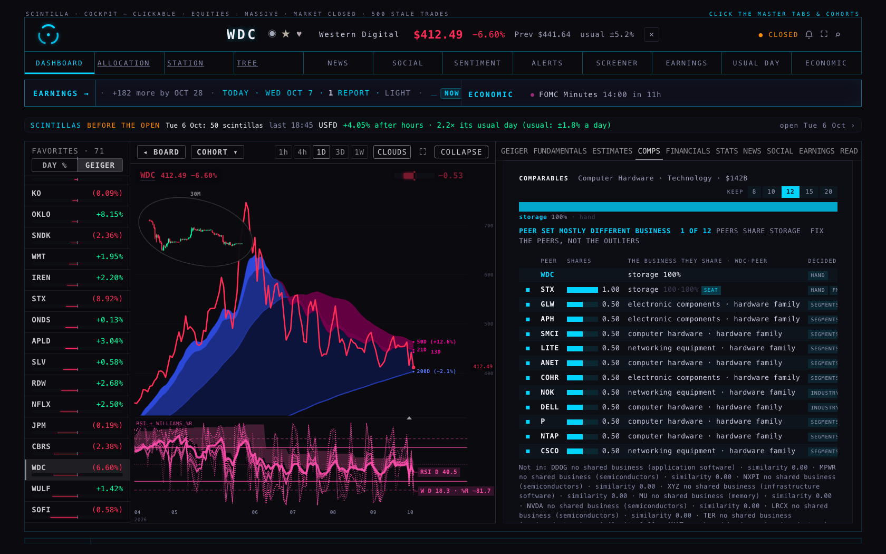
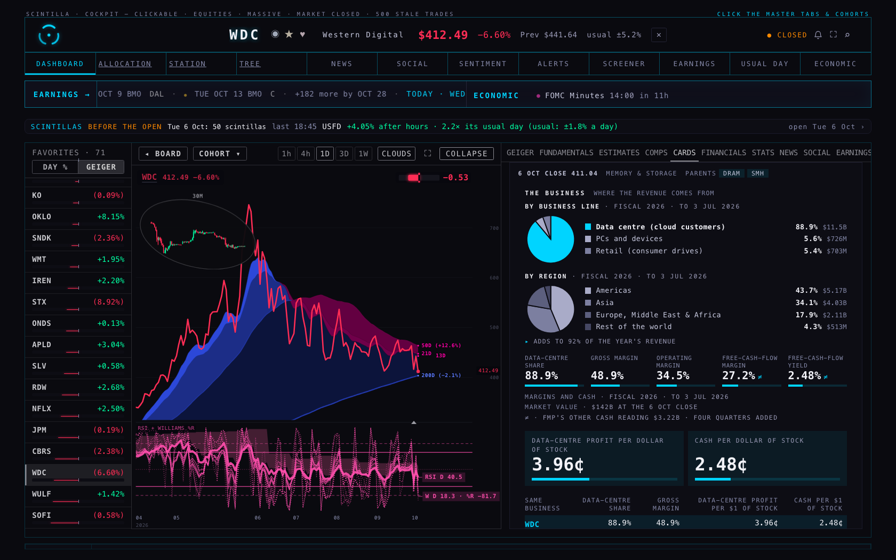
| DATA-CENTRE PROFIT PER $1 OF STOCK | CASH PER $1 OF STOCK | DATA-CENTRE SHARE OF REVENUE | GROSS MARGIN | OPERATING MARGIN | FREE-CASH-FLOW MARGIN | FREE-CASH-FLOW YIELD | |
|---|---|---|---|---|---|---|---|
| Western Digital WDC | 3.96¢ | 2.48¢ | 88.9% | 48.9% | 34.5% | 27.2% | 2.48% |
| SanDisk SNDK | 1.50¢ | 4.67¢ | 25.4% | 71.5% | 61.2% | 56.8% | 4.67% |
| Micron MU | ≈5.46¢ | 4.48¢ | ≈60% | 80.7% | 75.0% | 39.7% | 4.48% |
| Seagate STX | ≈2.46¢ | 1.72¢ | ≈80% | 45.6% | 33.6% | 25.5% | 1.72% |
| REVENUE · 12 MONTHS | × DATA-CENTRE SHARE | = DATA-CENTRE REVENUE | × GROSS MARGIN | = DATA-CENTRE PROFIT | ÷ MARKET VALUE · 6 OCT CLOSE | = PER $1 OF STOCK | |
|---|---|---|---|---|---|---|---|
| Western Digital | $12.9B | 88.9% | $11.5B | 48.9% | $5.62B | $142B | 3.96¢ |
| SanDisk | $20.2B | 25.4% | $5.14B | 71.5% | $3.68B | $246B | 1.50¢ |
| Micron | $133B | ≈60% | ≈$79.9B | 80.7% | ≈$64.5B | $1.18T | ≈5.46¢ |
| Seagate | $12.2B | ≈80% | ≈$9.76B | 45.6% | ≈$4.45B | $181B | ≈2.46¢ |
| FREE CASH FLOW · 12 MONTHS | READ FROM | ÷ MARKET VALUE · 6 OCT CLOSE | = PER $1 OF STOCK | |
|---|---|---|---|---|
| Western Digital | $3.51B | FULL-YEAR STATEMENT · TO 2026-07-03 | $142B | 2.48¢ |
| SanDisk | $11.5B | FULL-YEAR STATEMENT · TO 2026-07-03 | $246B | 4.67¢ |
| Micron | $52.9B | FOUR QUARTERS ADDED · TO 2026-09-03 | $1.18T | 4.48¢ |
| Seagate | $3.10B | FULL-YEAR STATEMENT · TO 2026-07-03 | $181B | 1.72¢ |
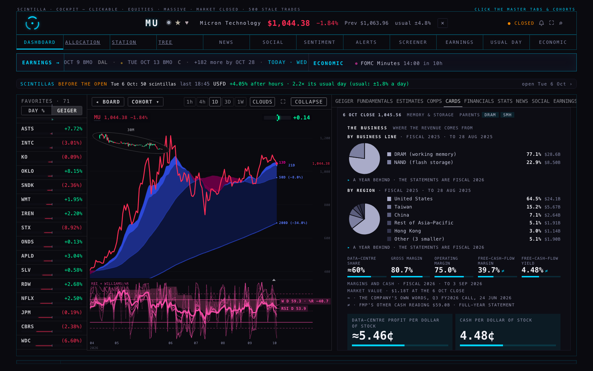
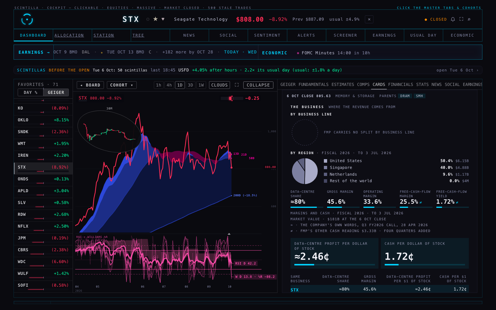
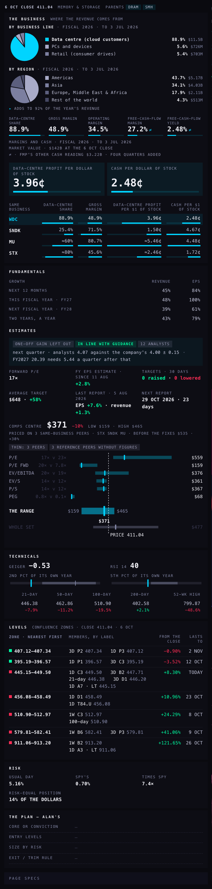
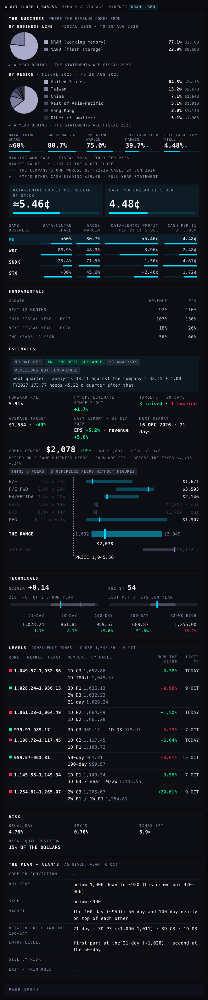
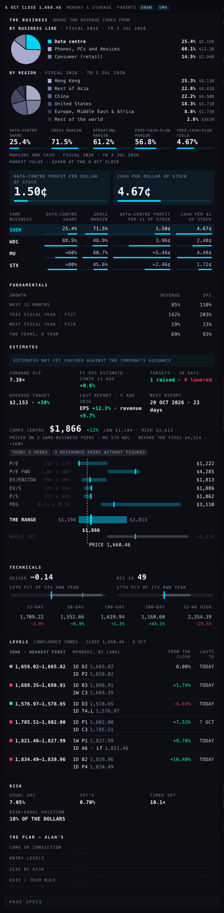
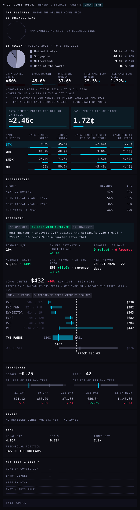
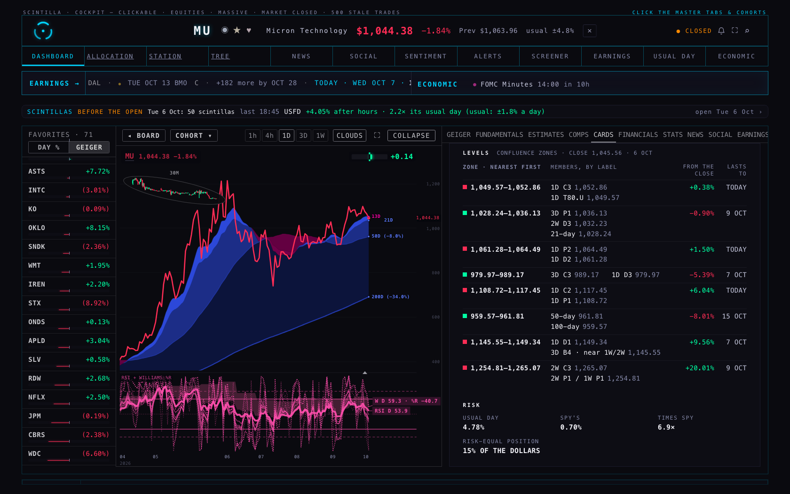
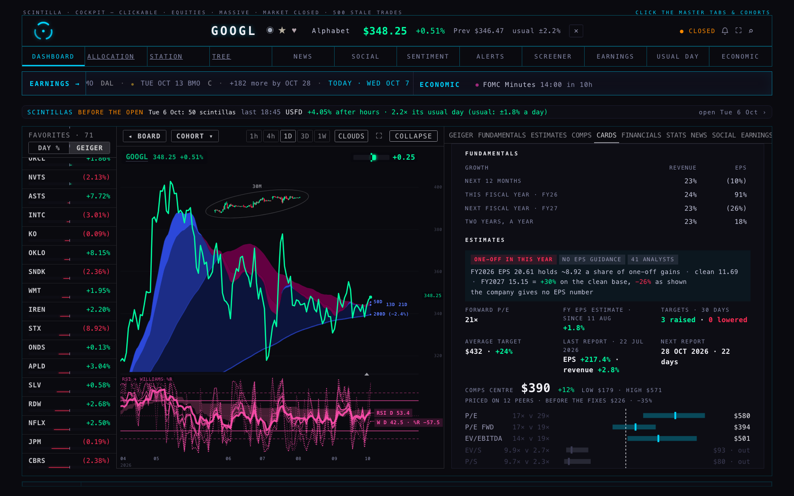
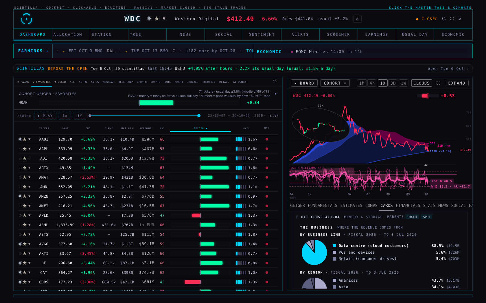
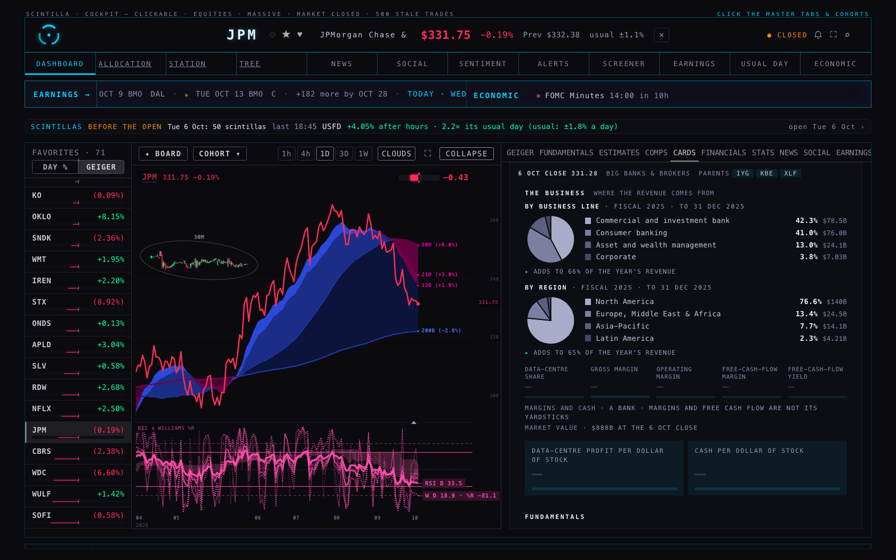
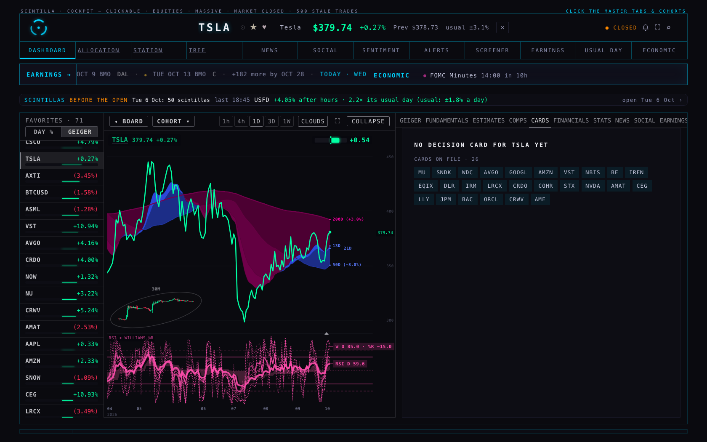
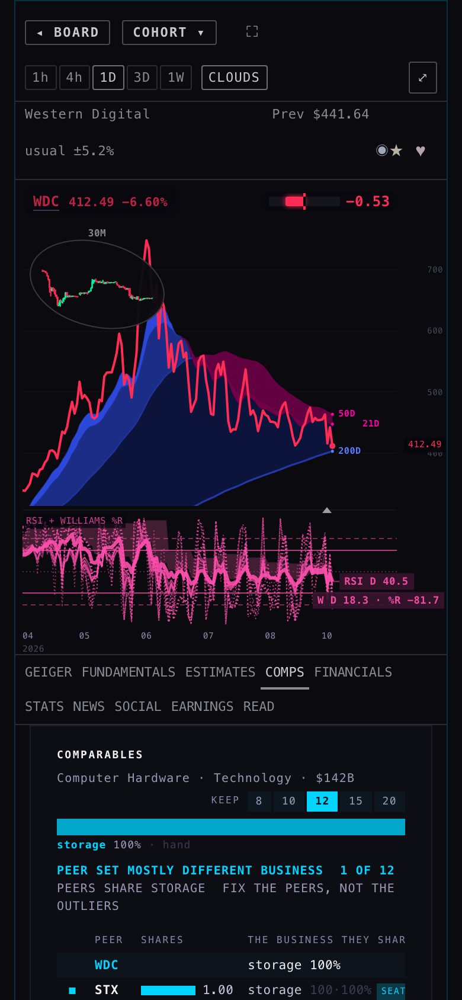
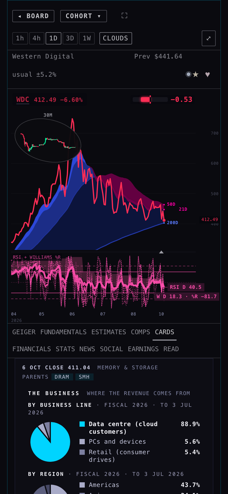
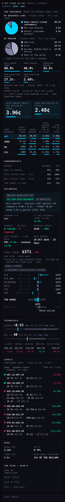
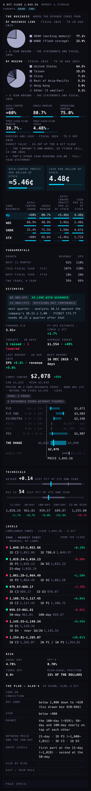
| QUOTED TO YOU ON 7 OCT | FMP · FULL-YEAR STATEMENT | FMP · FOUR QUARTERS ADDED | THE HUB'S OWN TABLE | ON THE CARD | YIELD ON THE CARD | WHY | |
|---|---|---|---|---|---|---|---|
| Western Digital | $3.20B · 2.3% | $3.51B | $3.22B | $3.51B | $3.51B | 2.48% | THE TWO READINGS DIFFER BY 8%; THE FILED FULL-YEAR STATEMENT IS USED |
| SanDisk | $11.5B · 4.7% | $11.5B | $11.5B | $11.5B | $11.5B | 4.67% | ALL READINGS AGREE |
| Micron | $52.9B · 4.5% | $59.0B | $52.9B | $89.7B | $52.9B | 4.48% | THE FULL-YEAR ROW HAS NO CAPITAL-SPENDING LINE YET (TAKEN FROM THE EARNINGS RELEASE) |
| Seagate | $3.30B · 1.8% | $3.10B | $3.33B | $3.10B | $3.10B | 1.72% | ONE QUARTER FILES CAPITAL SPENDING WITH THE WRONG SIGN, SO THE QUARTERS OVERSTATE |
| SHARE | TAKEN FROM | WHAT COUNTS | |
|---|---|---|---|
| MU | ≈60% | THE COMPANY'S OWN WORDS | Q3 FY2026 CALL, 24 JUN 2026 · “THE AEBU AND MCBU BUSINESSES — BOTH NON-DATA CENTER — ARE ALMOST 40% OF OUR COMPANY REVENUE.” |
| SNDK | 25.4% | FMP'S OWN DATA-CENTRE LINE | DATACENTER · |
| WDC | 88.9% | FMP'S SPLIT · NAMED BY HAND | CLOUD · WESTERN DIGITAL'S NAME FOR DRIVES SOLD TO CLOUD AND ENTERPRISE DATA CENTRES |
| GOOGL | 14.6% | FMP'S SPLIT · NAMED BY HAND | GOOGLE CLOUD · ITS CLOUD BUSINESS: IT SELLS DATA-CENTRE COMPUTING |
| AMZN | 18.0% | FMP'S SPLIT · NAMED BY HAND | AMAZON WEB SERVICES · ITS CLOUD BUSINESS: IT SELLS DATA-CENTRE COMPUTING |
| IREN | 18.2% | FMP'S SPLIT · NAMED BY HAND | AI CLOUD · ITS AI CLOUD (RENTED GRAPHICS PROCESSORS); THE REST IS BITCOIN MINING |
| EQIX | 100% | FMP'S SPLIT · NAMED BY HAND | A DATA-CENTRE LANDLORD: ALL OF ITS REVENUE IS DATA-CENTRE SPACE, POWER AND CONNECTIONS |
| DLR | 100% | FMP'S SPLIT · NAMED BY HAND | A DATA-CENTRE LANDLORD: ALL OF ITS REVENUE IS DATA-CENTRE RENT AND SERVICES |
| IRM | 13.2% | FMP'S OWN DATA-CENTRE LINE | GLOBAL DATA CENTER BUSINESS · |
| COHR | 74.1% | FMP'S OWN DATA-CENTRE LINE | DATACENTER & COMMUNICATIONS · · FMP'S LINE IS DATACENTER & COMMUNICATIONS: IT CARRIES MORE THAN DATA CENTRE |
| STX | ≈80% | THE COMPANY'S OWN WORDS | Q3 FY2026 CALL, 28 APR 2026 · “THE DATA CENTER MARKET ACCOUNTED FOR 88% OF EXABYTE SHIPMENTS AND 80% OF REVENUE, WITH STRONG DEMAND CONTRIBUTION FROM BOTH GLOBAL CLOUD AND ENTERPRISE CUSTOMERS.” |
| NVDA | 89.7% | FMP'S OWN DATA-CENTRE LINE | DATA CENTER · |
| CRWV | 100% | FMP'S SPLIT · NAMED BY HAND | IT RENTS DATA-CENTRE COMPUTING AND REPORTS ONE BUSINESS |
| DATA-CENTRE SHARE | GROSS | OPERATING | FREE CASH FLOW | FCF MARGIN | FCF YIELD | DATA-CENTRE PROFIT / $1 | CASH / $1 | SPLIT YEAR | ZONES | ESTIMATES CHECKED | |
|---|---|---|---|---|---|---|---|---|---|---|---|
| MU | ≈60% | 80.7% | 75.0% | $52.9B ≠ | 39.7% | 4.48% | ≈5.46¢ | 4.48¢ | FY2025 · A YEAR BEHIND | 8 | YES |
| SNDK | 25.4% | 71.5% | 61.2% | $11.5B | 56.8% | 4.67% | 1.50¢ | 4.67¢ | FY2026 | 6 | — |
| WDC | 88.9% | 48.9% | 34.5% | $3.51B ≠ | 27.2% | 2.48% | 3.96¢ | 2.48¢ | FY2026 | 7 | YES |
| AVGO | — | 67.7% | 48.3% | $39.4B | 44.2% | 2.20% | — | 2.20¢ | FY2025 | 12 | — |
| GOOGL | 14.6% | 60.9% | 33.1% | $53.3B | 11.9% | 1.27% | 0.94¢ | 1.27¢ | FY2025 | 10 | YES |
| AMZN | 18.0% | 50.8% | 12.1% | ($11.6B) | (1.5%) | (0.42%) | 2.57¢ | (0.42¢) | FY2025 | 11 | YES |
| VST | — | 13.0% | 2.3% | $1.38B | 8.6% | 2.54% | — | 2.54¢ | FY2025 | 12 | — |
| NBIS | — | 58.6% | (49.3%) | ($5.88B) | (434%) | (9.81%) | — | (9.81¢) | NO SPLIT | 7 | — |
| BE | — | 31.2% | 11.2% | $628M | 20.2% | 0.72% | — | 0.72¢ | FY2025 | 10 | — |
| IREN | 18.2% | 68.9% | (148%) | ($1.99B) ≠ | (282%) | (13.51%) | 0.60¢ | (13.5¢) | FY2026 | — | — |
| EQIX | 100% | — | — | — | — | — | — | — | FY2025 | — | — |
| DLR | 100% | — | — | — | — | — | — | — | FY2025 | — | — |
| IRM | 13.2% | — | — | — | — | — | — | — | FY2025 | — | — |
| LRCX | — | 50.5% | 35.3% | $4.89B | 21.1% | 1.17% | — | 1.17¢ | FY2026 | — | YES |
| CRDO | — | 67.1% | 31.7% | $439M | 27.6% | 1.07% | — | 1.07¢ | FY2026 | — | — |
| COHR | 74.1% | 37.5% | 12.7% | ($1.03B) | (14.5%) | (1.56%) | 2.99¢ | (1.56¢) | FY2026 | — | — |
| STX | ≈80% | 45.6% | 33.6% | $3.10B ≠ | 25.5% | 1.72% | ≈2.46¢ | 1.72¢ | NO SPLIT | — | YES |
| NVDA | 89.7% | 74.7% | 65.2% | $127B | 41.9% | 2.19% | 3.50¢ | 2.19¢ | FY2026 | 12 | — |
| AMAT | — | 49.4% | 30.5% | $5.62B | 18.2% | 1.34% | — | 1.34¢ | FY2025 | — | — |
| CEG | — | 17.4% | 14.9% | $309M | 1.0% | 0.29% | — | 0.29¢ | FY2025 | — | — |
| LLY | — | 83.4% | 49.7% | $20.1B | 25.2% | 1.84% | — | 1.84¢ | FY2025 | — | — |
| JPM | — | — | — | — | — | — | — | — | FY2025 | — | — |
| BAC | — | — | — | — | — | — | — | — | FY2025 | — | — |
| ORCL | — | 63.9% | 32.4% | ($28.7B) | (40.0%) | (6.89%) | — | (6.89¢) | FY2025 · A YEAR BEHIND | 11 | — |
| CRWV | 100% | 67.4% | (3.0%) | ($13.7B) | (180%) | (27.29%) | 10.2¢ | (27.3¢) | NO SPLIT | 7 | — |
| AME | — | 36.6% | 26.1% | $1.82B | 23.2% | 3.14% | — | 3.14¢ | FY2025 | — | — |
You asked on 7 Oct where the segment and margin data should live when you open a name on the dashboard — "in pie charts" — and how to blend a company with more data-centre revenue against one with a fatter margin. This is the answer, built on a branch: a new CARDS tab in the company view, beside COMPS, that shows the decision card for the name, with the business at the top.
Nothing here is live. The Hub you use is unchanged. The pictures were taken from this branch running in a hidden test browser against the live data; you decide whether it goes on.
The card, top to bottom: the business (two pies, five figures, the blend, the same business side by side), then fundamentals (growth, the estimates with a flag line on top, the comps range), technicals, the levels (confluence zones, nearest first), risk, and your plan. It lays out facts and levels; it never says buy or sell.
Both figures are in the same unit: cents a year for every dollar of the stock.
Western Digital sells 88.9% of its revenue to data centres at a 48.9% gross margin; SanDisk only 25.4%, but at 71.5%. Put through the blend, a dollar of Western Digital buys 3.96¢ of data-centre profit and 2.48¢ of cash; a dollar of SanDisk buys 1.50¢ of data-centre profit and 4.67¢ of cash. So Western Digital is the purer data-centre holding per dollar, and SanDisk throws off nearly twice the cash per dollar. Micron comes out highest on data-centre profit per dollar (about 5.46¢) and close to SanDisk on cash (4.48¢); Seagate is lowest on cash (1.72¢).
The one thing to keep in mind: companies do not report a margin for each segment, so the company's own gross margin is applied to its data-centre revenue. If a company's data-centre lines earn more than its average, its figure here is too low; if they earn less, too high. The card says this when you rest the pointer on the figure.
The AEBU and MCBU businesses — both non-data center — are almost 40% of our company revenue.(those are its mobile-and-PC unit and its cars-and-industrial unit) — so a little over 60%; the two quarters before, its two data-centre units added to 56% and 56%. Seagate, Q3 FY2026 call, 28 Apr 2026:
The data center market accounted for 88% of exabyte shipments and 80% of revenue, with strong demand contribution from both global cloud and enterprise customers.
Pictures at 1680 wide and at phone width (390), taken in a hidden browser from this branch under the Hub's own address, with the live database and chart service; every attempt to write was blocked and counted (none was made). The full test suite: the same seven failures as the commit this branch starts from — the five known ones and two that depend on today's date — and 29 new checks, all passing. The FMP figures were read on three short-lived machines on Fly, each created, used and removed inside this run; no key was printed or stored.